OUTPUT SHAFT > INSPECTION |
| 1. INSPECT OUTPUT SHAFT |
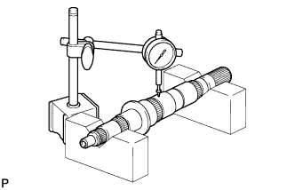 |
Using a dial indicator and 2 V-blocks, measure the shaft runout.
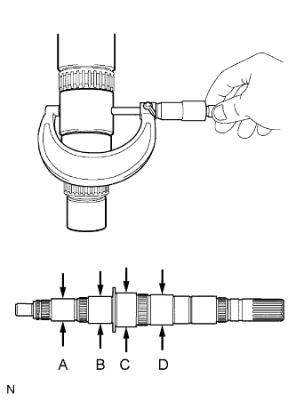 |
Using a micrometer, measure the journal diameter.
| Part | Specified Condition |
| A | 37.979 to 37.995 mm (1.4952 to 1.4959 in.) |
| B | 45.984 to 46.000 mm (1.8104 to 1.8110 in.) |
| C | 57.984 to 58.000 mm (2.2828 to 2.2835 in.) |
| D | 49.979 to 49.995 mm (1.9677 to 1.9683 in.) |
| Part | Specified Condition |
| A | 37.979 mm (1.4952 in.) |
| B | 45.984 mm (1.8104 in.) |
| C | 57.984 mm (2.2828 in.) |
| D | 49.979 mm (1.9677 in.) |
| 2. INSPECT 3RD GEAR |
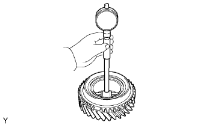 |
Using a cylinder gauge, measure the inside diameter of the 3rd gear.
| 3. INSPECT 5TH GEAR |
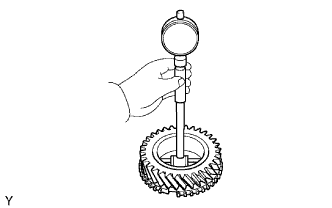 |
Using a cylinder gauge, measure the inside diameter of the 5th gear.
| 4. INSPECT 2ND GEAR |
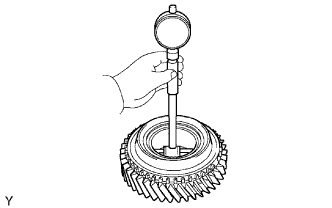 |
Using a cylinder gauge, measure the inside diameter of the 2nd gear.
| 5. INSPECT 1ST GEAR |
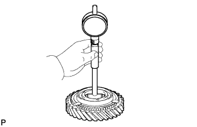 |
Using a cylinder gauge, measure the inside diameter of the 1st gear.
| 6. INSPECT NO. 2 TRANSMISSION HUB SLEEVE |
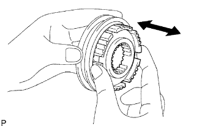 |
Check the sliding condition between the No. 2 transmission clutch hub and No. 2 transmission hub sleeve.
Check that the spline gear teeth of the No. 2 transmission hub sleeve are not worn.
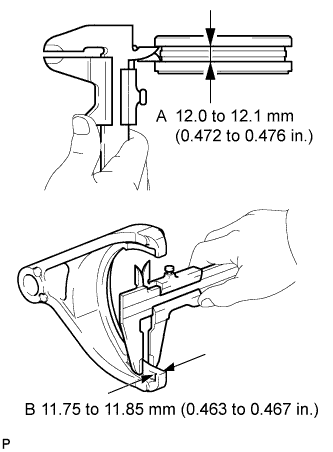 |
Using a vernier caliper, measure the width of the No. 2 transmission hub sleeve groove (A) and the thickness of the claw part on the gear shift forks (B), and calculate the clearance.
| 7. INSPECT NO. 3 TRANSMISSION HUB SLEEVE |
Check the sliding condition between the No. 3 transmission clutch hub and No. 3 transmission hub sleeve.
Check that the spline gear teeth of the No. 3 transmission hub sleeve are not worn.
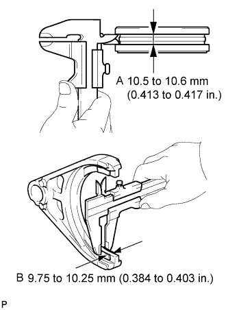 |
Using a vernier caliper, measure the width of the No. 3 transmission hub sleeve groove (A) and the thickness of the claw part on the gear shift forks (B), and calculate the clearance.
| 8. INSPECT NO. 1 TRANSMISSION HUB SLEEVE |
Check the sliding condition between the No. 1 transmission clutch hub and No. 1 transmission hub sleeve.
Check that the spline gear teeth of the No. 1 transmission hub sleeve are not worn.
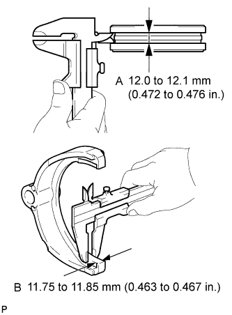 |
Using a vernier caliper, measure the width of the No. 1 transmission hub sleeve groove (A) and the thickness of the claw part on the gear shift forks (B), and calculate the clearance.
| 9. INSPECT NO. 3 SYNCHRONIZER RING SET (FOR 3RD GEAR) |
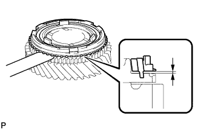 |
Using a feeler gauge, measure the clearance between the synchronizer ring and the 6th gear.
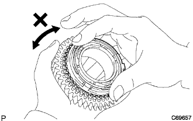 |
Coat the 3rd gear cone with gear oil. Check the braking effect of the synchronizer ring. Turn the synchronizer ring in one direction while pushing it to the 3rd gear cone. Check that the ring locks.
| 10. INSPECT NO. 3 SYNCHRONIZER RING (FOR 5TH GEAR) |
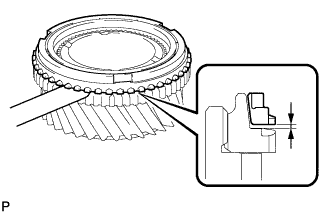 |
Using a feeler gauge, measure the clearance between the synchronizer ring and the 5th gear.
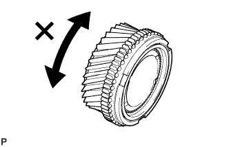 |
Coat the 5th gear cone with gear oil. Check the braking effect of the synchronizer ring. Turn the synchronizer ring in one direction while pushing it to the 5th gear cone. Check that the ring locks.
| 11. INSPECT NO. 2 SYNCHRONIZER RING SET (FOR 2ND GEAR) |
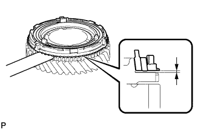 |
Using a feeler gauge, measure the clearance between the synchronizer ring and 2nd gear.
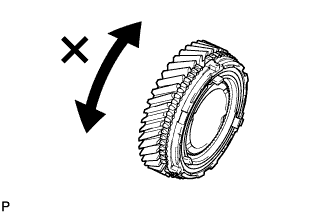 |
Coat the 2nd gear cone with gear oil. Check the braking effect of the synchronizer ring. Turn the synchronizer ring in one direction while pushing it to the 2nd gear cone. Check that the ring locks.
| 12. INSPECT NO.1 SYNCHRONIZER RING SET (FOR 1ST GEAR) |
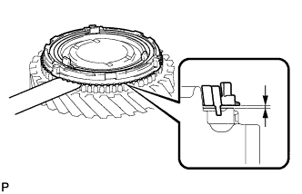 |
Using a feeler gauge, measure the clearance between the synchronizer ring and 1st gear.
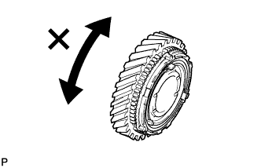 |
Coat the 1st gear cone with gear oil. Check the braking effect of the synchronizer ring. Turn the synchronizer ring in one direction while pushing it to the 1st gear cone. Check that the ring locks.